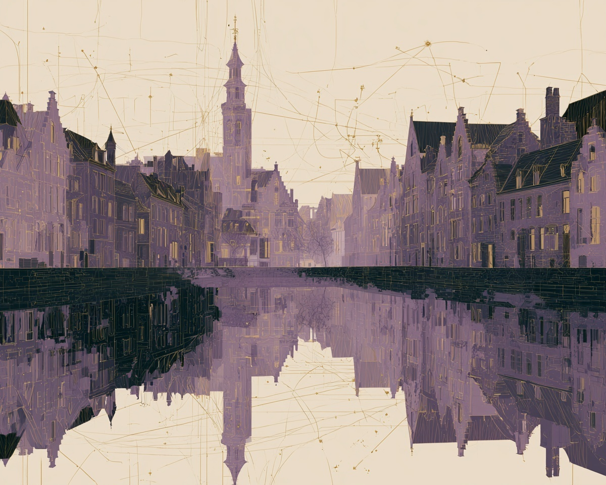
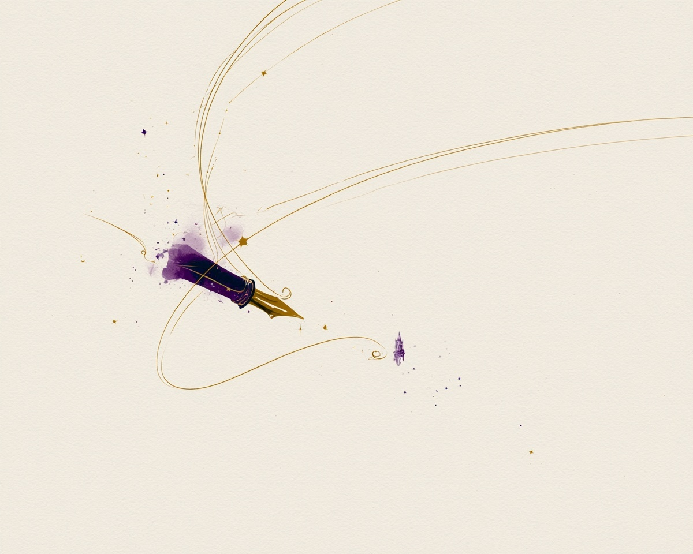

The Map Room
A Career, Charted
Research has carried me farther than I ever expected. Each pin on this map marks a place where years of carefully collected evidence became a conversation with surgeons, researchers, regulators, and colleagues around the world.
-
2015
Columbia, South Carolina
Midlands Orthopaedics & Neurosurgery
Every journey begins with a first archive.
In 2015, I joined Midlands Orthopaedics, where I began helping build and steward what would become one of the world’s largest longitudinal hip resurfacing outcome registries. Nearly a decade later, that registry continues to answer new clinical questions through research, publications, and international collaboration.
-
2024
Nashville, Tennessee
International Society for Technology in Arthroplasty (ISTA)
Years of registry work reached the podium.
I presented multiple talks focused on long-term outcomes following metal-on-metal hip resurfacing and total hip arthroplasty. The meeting marked an opportunity to share real-world evidence with an international community dedicated to advancing arthroplasty technology.
-
2025
Rome, Italy
International Society for Technology in Arthroplasty (ISTA)
Research traveled farther than I could.
Multiple podium presentations and posters were accepted for ISTA 2025. Although I was unable to attend in person, the work was presented by collaborators, continuing the conversation around long-term registry evidence and hip resurfacing outcomes.
-

2026
Bruges, Belgium
International Society for Hip Arthroscopy (ISHA)
The registry continues to tell new stories.
At ISHA 2026, I will present two podium presentations and two scientific posters spanning more than twenty-five years of hip resurfacing research. Topics include implant survivorship in young patients, femoral fracture risk, management of large femoral defects, and outcome-validated metal ion thresholds; work made possible by decades of carefully maintained clinical data.
-

Future
Where Next?
The map is still being drawn.
Every publication answers one question and uncovers several more. The next destination will be wherever careful evidence has another story to tell.